Best Progress Photo Apps in 2026: 10 Apps, Same Photos, Same Scorecard
By Mark Stepchin · Updated [CONFIRM: publish date]
My top pick is Recomp, the free app I built. It's the only free app here that runs the whole weekly check-in and also takes in years of camera-roll photos [after 3.6: in-app camera] [CONFIRM: after hands-on testing]. Use something else if you want:
4 · 0·1·TBD (design "simple and clean") · TBD · 5·TBD, + 0 import; total TBD, 10 from the four scored [CONFIRM: design, performance and backup scores pending; privacy 5 provisional; rubric floor is 1, use 0 or 1?]
Full disclosure: I built one of these apps, and it's my top pick. I'm Mark, and I make Recomp: Progress Photo Tracker, not "Recomp AI – 3D Body Scanner" from ISO Labs. Recomp is free with no in-app purchases, so I don't make money if you download it, and no other app here pays me [CONFIRM: no ads, affiliate links or partner deals].
How I kept it fair: I fixed the criteria and the comparison table on [CONFIRM: date], before installing anything. Every app ran on the same iPhone and iOS version with the same photos, and I paid for every premium tier [CONFIRM]. Recomp gets a flaws list like every app, five sections name who beats it, and there are no star ratings.
[SCREENSHOT: all apps – compare view grid of the same before/after pair]
Why trust me on progress photo apps
I've taken 450+ weekly progress photos [CONFIRM] since [CONFIRM: year], and for years they sat in my camera roll. Each week I shot front, side and back and logged my weight. iOS Photos had no side-by-side view, so I built Recomp.
First, I read the 15 roundups that rank for this search. Two compared listed features without testing. Eight show no screenshots, several recommend apps last updated in 2017, and most put their own app first. I put mine first too, so every claim below has a screenshot from my own photos and a row in one table.
What a progress photo app needs, and how I ranked them
I ranked every app on the four principles I built Recomp on, plus privacy. I wrote the four down in why I built Recomp, after more than 10 dedicated apps failed to stick. Recomp was built to meet exactly these needs, so this rubric favors my app, and you should weigh its grade with that in mind. Under each need are the 1-to-5 scores that measure it.
Tracking must be effortless. If it takes more than a minute and a few taps, consistency drops. The whole loop, from the reminder to a side-by-side with last week, should fit in that minute.
Scored: capture and tracking, which covers reminders, camera, pose guide, ghost overlay, timer and weight beside the photo.
The app needs to stay out of the way. You're here to see your photos, not the developer's fancy buttons. Without precise alignment and instant moves between dates, I couldn't tell whether I was progressing.
Scored: alignment, by hand or automatic (why auto-alignment is hard to do well [CONFIRM: live before publish; final URL]). Comparison, or how fast the same pose from two dates lands side by side. Design, for clutter and polish, where a feed, badge or upsell costs a point only when it blocks a check-in or compare.
It's a power tool, with top-notch performance across hundreds or thousands of photos. Weekly front, side and back shots add up to 156 photos a year, and an imported archive can start in the hundreds on day one.
Scored: performance, meaning how long a [CONFIRM: photo count]-photo import takes and whether scrolling the full history stutters.
It's a specialized tool, built to fit into the suite of apps power users already rely on. A photo app should do photos and weight well, and leave workouts and food to the apps built for them. Each grade line labels an app a power-user suite piece or a beginner all-in-one.
Bonus, kept out of the total: import and integrations, meaning old photos from the Photos app, past weights and Apple Health.
Your photos stay private: stored on your phone, never uploaded, with no account. An upload or an account puts years of body photos on someone else's servers, under their policy. A backup to your own iCloud or computer still counts as private, and a lost phone shouldn't take your history with it.
Scored: privacy, from the App Store label, where photos live, any account and an app lock. Backup, meaning whether check-ins survive deleting the app or switching phones.
Each entry also names the app's philosophy and what it costs. The philosophy is the one thing the developer built around, like Fit-Stitch's one-payment iCloud sync or Check-In's "no AI by design." Cost covers the price, what sits behind the paywall, and whether you need an account.
This guide is for weekly physique photos, whether you start today or have years of them in the camera roll. Apps built for another job are out of scope:
Calorie trackers like MyFitnessPal, which attach a photo to a weigh-in.
Workout trackers and plan generators like Hevy, which file photos under body measures.
AI body-fat analysis apps.What scans and AI can tell you covers their accuracy. GainFrame estimates body fat too, but it's graded on the same criteria as every other app, not on its AI.
Collage and timelapse makers, which turn photos into a video or a layout, not a record.
3D body scanners like MeThreeSixty.
Hevy, MyFitnessPal and timelapse makers each get a line in The competition.
A progress photo pays off only when you compare it, and the comparison is what gets you to take the next one. With my coach, the loop closed every week: I sent front, side and back photos and my weight, he pointed out what changed, and he adjusted my plan. His weekly feedback is what kept me shooting [CONFIRM: Mark's own habit, and how often he compares now]. When coaching ended, I tried collage apps and my laptop for the compare step, and the detour broke the loop.
The loop breaks at either end. Slow capture means a skipped week. A comparison that's buried, crooked or in another app means photos that pile up unseen. Hevy files photos under Measures, and Fit-Stitch builds every comparison in its own form. Effortless tracking covers capture, and staying out of the way covers compare. So the capture clock stops at the side-by-side with last week, not the shutter, and each extra screen, form or app costs comparison points.
Recomp's current version has no camera of its own. You shoot with the iPhone camera, then import, and bulk import groups the photos into check-ins by date. Recomp 3.6 adds an in-app camera with a ghost of your last photo, so capture and compare happen in one app, and those photos stay inside Recomp [after 3.6: in-app camera].
What scans and AI can tell you about your body in 2026
Phone scans and AI body-fat apps repeat themselves closely but miss lab methods by roughly 2 to 6 points. In a 2026 study, MeThreeSixty, Bodygram and ZOZOFIT all read lower than DXA, and none matched it within 2 points. I compare them with DEXA, BIA scales, calipers and the Navy tape method in How accurate are AI body-fat estimates? [CONFIRM: live before publish; REC-80 is still draft PR 19].
No study I found tests whether an app can tell flat from full, bloated or holding water. Validation studies remove those states on purpose: participants fast and skip training first. Amazon's paper lists a large meal, an intense workout and flexing as possible causes of error. Even DXA, the reference, read 2 to 3% more lean mass in 18 cyclists after 48 hours of carb loading (3% when combined with creatine loading), though they'd gained almost no muscle.
What's necessary is the same photos, taken the same way, every week. Every number above needed fixed pose, light, distance and timing. In a 74-person study, consistent weeks of weigh-ins predicted less regain, and the total count didn't. A ghost overlay or auto-alignment helps you keep that routine. Physique scores and AI projections don't change next week's plan [CONFIRM: Mark agrees with this fluff call]. Recomp has a reminder, a ghost of your last photo per pose [after 3.6: ghost overlay] and two dates side by side, but no auto-alignment.
The goal is to learn to read your own body, not to outsource it to AI. Jeff Nippard's What Every Body Fat % Actually Looks Like (50% to 5%) shows DEXA-measured people at the same percentage looking very different. I was bad at reading my own photos at first, and what fixed it was years of weekly side-by-sides, not a number [CONFIRM]. I cover telling flat from bloated from leaner in [LINK: separate article on reading progress photos], and why I skip AI in [LINK: separate article on reading your own body vs AI].
Which progress photo app features do people actually use?
I searched 732 written App Store reviews of seven progress photo apps for the features these apps advertise. They come from Apple's public feeds for Fit-Stitch, Lasmit, Metamorph, GainFrame, Photo Journey, Thumbstone and Then & Now. I matched keywords, then read every hit and sorted it into asks, complaints and praise. Caveats: 511 reviews are Lasmit's, a measurement tracker, and only 159 date from 2024 or later. [CONFIRM: Mark has checked the counts in the sources file]
Feature
Apps with it (of 10 others checked, confirmed)
Review evidence (732 reviews)
Verdict
Free-text tags
1
0 ask for or praise them
Unasked
Social feed or leaderboard
3
0 ask for a feed; 6 mention sharing results
Feed unasked; sharing an image is a small real need
AI body-fat estimate
1
5 praise AI analysis (2 name body fat); 7 want body fat calculated from tape or calipers; 1 asks for AI measurements
Wanted
Badges
3
1 praises them, 0 ask
Unasked
Streaks
4
0 mention them
Unasked, weak evidence
Body-part measurements
4
220 of the measurement tracker's 511; 2 asks in the other 221
Real need, different audience
Widgets
3
1 ask
Barely asked
Apple Watch app
2
0 ask for one; 2 want Watch health data synced
Unasked for photos
Themes
2
0 ask
Unasked
Reminders
8
37 mention them, 32 positively
Real need
Notes
2
3 ask, 1 thanks the developer, 2 praise
Real need, small
Phases (bulk and cut blocks)
1
0 mention them
Unasked so far
Timelapse or video export
4
6 mention it: 1 asks, 1 wants a broken one fixed, 2 praise, 2 complain
Separate app category
Collages and custom layouts
1
0 mention collages; 3 discuss before/after layouts, all 2014–2016
Separate app category
Nobody asked for tags. One app of the 10 has free-text tags, and no review asks for them or praises them. The only "label" complaint wanted front and side labels, which Recomp has. People describe context in sentences instead. A Photo Journey reviewer wrote, "I wanted somewhere where I can add notes like what makeup I’m wearing, cycle, food etc that impact appearance." Notes shipped five days later. Recomp has notes on every check-in.
Feeds, badges, streaks, widgets, themes and Watch apps barely come up. The 732 reviews hold 0 asks for a feed, streaks or themes, 1 for widgets and none for a Watch photo app. People do send results out: 6 reviews mention sharing them with a coach, friends or Facebook. Every app with streaks or themes has 25 or fewer written reviews here, so that silence proves less.
Recomp skips all of these except System, Light and Dark appearance, and it covers the sharing need. Its share button builds a new before/after image and sends it through the share sheet, to a coach or anyone else. It has no feed, widget or Watch app.
Timelapses and collages belong to a different kind of app. Only 6 of the 732 reviews mention a timelapse or video, and none mention a collage. One asks for a timelapse export, one wants a broken progress video fixed, and two praise one. The other two complain about a low-resolution, watermarked video and an app that "only allows you to take photos and export them as a “time lapse”" with no side-by-side. Compare and side-by-side terms appear in 67 reviews.
Two of these apps started as timelapse makers. Metamorph began as a stop-motion app for renovations, plants and kids, and Photo Journey as a daily timelapse app, before both turned to body progress. Three Fit-Stitch reviews from 2014 to 2016 discuss its before/after layouts, and one asks it to "go back to the old before/after set up." I don't grade timelapse or collage output here.
AI body fat is wanted, and accuracy is the problem. Five reviews praise an app's AI analysis, two of them its body-fat number. Seven more complain that a measurement tracker won't calculate body fat from tape or caliper numbers. What scans and AI can tell you covers why I skip it.
Measurements are a real need, for a different audience. In the measurement tracker, 220 of 511 reviews mention measurements, more than mention photos (125). In the six photo-first apps, 2 of 221 reviews ask for them. Recomp had none, so this roundup sends tape-measure trackers to Lasmit. Recomp 3.6 adds eight optional measurements so those lifters don't pass it over [after 3.6: body measurements]. It's an honest bet on that audience, not something the reviews asked for.
Reminders are the feature people thank apps for. Of the 37 reviews that mention reminders, 32 are positive. The 5 complaints are about reminders that don't fire, ignore the chosen day, or can't be set the way people want. Recomp has a weekly reminder.
Phases have no demand yet. One app groups check-ins into bulk and cut blocks, and none of the 732 reviews mention bulk, cut, deload or a GLP-1 drug. I'll build them only once readers ask [CONFIRM: Mark's call on phases]. If you'd use them, email me.
Candidates came from the 15 ranking roundups and from App Store search and charts on Sep 30, 2026. I kept the most-mentioned, best-rated, top-ranked and newest apps, all updated in 2026. Every app I dropped is in The competition, with the reason.
The test kit
One kit for every app: [CONFIRM: iPhone model] on iOS [CONFIRM: version], tested [CONFIRM: dates] with no OS update. The set is 12 check-ins [CONFIRM: count] from my archive, each with front, side and back shots and that day's weight, spanning a cut and a bulk [CONFIRM]. One before/after pair, [CONFIRM: first date] and [CONFIRM: last date], appears in every compare screen.
In each app I:
Installed it fresh, noting the first paywall and any account prompt.
Logged a new check-in with the app's camera, timing and counting taps from the reminder to a side-by-side with last week (yardsticks: under a minute, 5 taps).
Aligned the shared pair with the app's own tools.
Compared the pair side by side and shared it as one image.
Checked storage in settings, the privacy label and airplane mode.
Deleted the app and restored an iPhone backup, then counted what came back [CONFIRM: done for every app].
Imported the 12 check-ins, timing a 100-photo bulk import where possible [CONFIRM: timings].
Loaded [CONFIRM: photo count] photos and scrolled the full history, noting any stutter.
I bought the cheapest full tier of every app, with no promo codes [CONFIRM: new total with GainFrame and without Hevy; purchases, dates and Photo Journey's tier]. I couldn't test Android or long-term reliability.
How the grades work
Seven scores of 1 to 5, grouped under the five needs, make a grade out of 35. Effortless tracking gets capture and tracking. Staying out of the way gets alignment, comparison and design. Power-tool speed gets performance, and privacy gets privacy and backup. Import and integrations, the specialized-tool need, gets its own 1 to 5 as a bonus, shown in the summary table but kept out of the total. S is 33–35, A 27–32, B 21–26, C 15–20, and D 14 or under [CONFIRM: cut points, rescaled from v8's 28/23/18/13 out of 30].
Import stays out of the total because importing my old photos is the gap I built Recomp to fill. Counting it would lift my own app's grade further. Philosophy and cost get a sentence in each entry, not a score [CONFIRM: rescore every app; v7's loop, compare, weight, import and UI scores don't cover alignment, design, performance, privacy or backup].
The comparison table
Every pick can be checked against this table. Privacy labels are the developers' own App Store answers, and "listing" means the store description says so. Versions are the App Store versions on Oct 1, 2026 [CONFIRM: tested versions].
App (version)
Time / taps to first check-in [CONFIRM: measure all]
Alignment aids
Where photos are stored
Account required
Privacy label
Ads [CONFIRM: check all]
Paywall / price
Recomp (3.6 [CONFIRM: tested version])
TBD
Ghost overlay with opacity slider at capture [after 3.6: ghost overlay]; manual pan/zoom/rotate in compare; no auto-align
Device only; camera shots not saved to Photos [after 3.6: camera saves]; no photo backup or export; dates and weights export as CSV
No
Anonymous analytics and crash reports, not linked to you, no tracking; Recomp never uploads your photos; Face ID lock [after 3.6: Face ID lock]
TBD
Free, no IAP
Fit-Stitch (7.0.2)
TBD
None: no ghost overlay, auto-align or manual alignment (tested)
Device (listing); optional iCloud Sync to your own account (settings toggle, tested); restore untested [CONFIRM: delete-and-restore test pending]
No (listing)
Data Not Linked to You: Health & Fitness, User Content, Diagnostics (policy says no analytics or crash reporting); Face ID lock (tested)
No (listing)
$4.99 upfront, no IAP
Thumbstone Progress Pics (1.9.4)
TBD
AI pose auto-align after capture, no overlay
Device, no in-app backup (developer)
No
Data Not Linked to You
TBD
Free trial, then $4.99/mo, $9.99–29.99/yr or $39.99 lifetime
Metamorph (2.17)
TBD
Ghost overlay before the shot; no alignment (tested)
Device or iCloud (listing); cloud sync (paywall)
[CONFIRM]
Data Not Collected (policy lists anonymous analytics and crash reports); Face ID lock (tested)
TBD
7-day trial, then $29.99/yr, $4.99/mo or /wk, $129.99 lifetime
Lasmit "Progress" (2026.22)
TBD
None (Smart Overlay off by default)
Device; optional iCloud sync (help article)
[CONFIRM]
Data Not Linked to You
TBD
Free + IAP: $3.99 or $5.99/mo, $11.99 or $19.99/yr, $29.99 lifetime
Check-In: Physique (2.5)
TBD
Ghost overlay
Device only (listing)
[CONFIRM]
Data Not Collected
TBD
Free, no IAP
Then & Now (2.3)
TBD
Manual Crop & Align per photo, ghost toggle (tested); ghost overlay (Premium), body silhouettes at capture
On device; optional iCloud (CloudKit) sync and Save to Camera Roll, both off by default (tested)
No
Data Not Collected; Face ID lock per album (tested)
TBD
Free + IAP: $4.99/mo, $29.99/yr, $99.99 lifetime
Photo Journey (1.12.7)
TBD
Ghost Mode overlay, countdown
"Save in app only" option [CONFIRM: the other option]
[CONFIRM]
Data Used to Track You
TBD
Free + IAP $3.99–44.99; unlimited photos need a subscription
GainFrame (3.24)
TBD
Auto and Adjust in compare (tested)
Device only; AI features send photos to Google Gemini, which discards them (policy)
No, for core photo features (policy)
Data Used to Track You; Data Linked to You
No (policy)
Free + IAP: $3.99/wk, $5.99 or $9.99/mo, $39.99 or $49.99/yr
Reminder: this is my app. Same test kit, same table, and its flaws are listed below.
Price Free, nothing to buy.
Data capture TBD. The reminder opens the camera or library, whichever you used last. The camera guides front, side and back poses with a ghost of your last photo, an opacity slider and a 3- or 10-second timer [after 3.6: in-app camera, ghost overlay, camera timer, reminder opens last-used source]. Only the date is required, and eight body measurements are optional [after 3.6: date-only check-ins, body measurements].
Alignment TBD. Pan, zoom and rotate by hand in Compare; no auto-alignment. See how well auto-alignment works [CONFIRM: live before publish; final URL].
Comparison TBD. Two dates side by side, and the timeline scrolls to any date instantly. Share comparison saves the aligned pair as one JPG with weight and date, no watermark.
Privacy TBD. Recomp never uploads your photos and needs no account. Anonymous analytics, including coarse location (region from IP), and crash reports, not linked to you, no tracking. Face ID lock [after 3.6: Face ID lock].
Backup TBD. No photo backup or export and no iCloud sync, so your iPhone backup is the only backup of your check-ins. Dates and weights export as CSV. See switching phones.
Data import TBD. Bulk import groups up to 500 photos into check-ins by day, up to 3 a day. Albums with originals only in iCloud get rejected. Past weights come from a CSV with a unit picker [after 3.6: CSV unit picker].
Design TBD.
Performance TBD.
Recomp wins because it's a free progress photo app with no account that covers capture, weight, compare and old photos [after 3.6: in-app camera]. The only other free app with no in-app purchases, Check-In, needs iOS 26. Of the 10 apps, only Recomp groups an imported library into check-ins by date [CONFIRM: Then & Now's import reads photo dates; check whether it groups same-day photos].
Flaws but not dealbreakers:
No Apple Health, and measurements don't show in Compare or charts [after 3.6: body measurements]. Lasmit has Apple Health.
iPhone only, with no track record yet. [Editor: Mark, the listing shows iPad, Mac and Vision Pro compatibility.]
[SCREENSHOT: Recomp – camera with ghost overlay] [after 3.6: in-app camera, ghost overlay]
[SCREENSHOT: Recomp – bulk import grouped by date]
[SCREENSHOT: Recomp – compare view]
What I'm building next, including an optional private iCloud backup and Apple Health weight, is on the Recomp roadmap. Nothing on it is scored here. [Editor: the page is live (PR 11 merged Oct 1), but it still lists in-app camera and measurements as "Next" and an "encrypted" iCloud backup as "Future." Update it to match REC-79 and REC-49 before publish.]
Grade: [CONFIRM: rescore on the v8 rubric; v7 provisional A, 19–22/25]. Power-user suite piece. Last updated: [CONFIRM: 3.6 release date].
Data capture 4. Date, weight, tags and several camera or library photos on one form. No ghost overlay, pose slots or timer [CONFIRM: no timer?].
Alignment 0 [CONFIRM: rubric floor is 1; use 0 or 1?]. No auto-alignment and no manual alignment.
Comparison 1. Each comparison is a card built in its own form, with no date scrubbing, so three old dates take three forms.
Privacy 5 (provisional). Face ID locks the app and blurs it in the app switcher. The label lists Health & Fitness, User Content and Diagnostics as Data Not Linked to You, but its policy says no analytics or crash reporting.
Backup TBD. Optional sync to your own iCloud. Delete All Data also wipes the iCloud copy, so it's sync, not a separate backup [CONFIRM: delete-and-restore test pending].
Data import 0. Nothing imports in bulk, and dates don't fill in from photo metadata.
Design TBD. Simple and clean [CONFIRM: design score].
Performance TBD.
Fit-Stitch syncs to your own iCloud for $4.99 once, the likeliest answer here to "what if I lose my phone?" It's the only paid app with no subscription. Logging is one clean form, and comparing is the weak spot.
Flaws but not dealbreakers:
A Sep 17, 2026 review says new photos disappeared. The latest update says it fixed saves failing when iCloud storage was full [CONFIRM: fix holds].
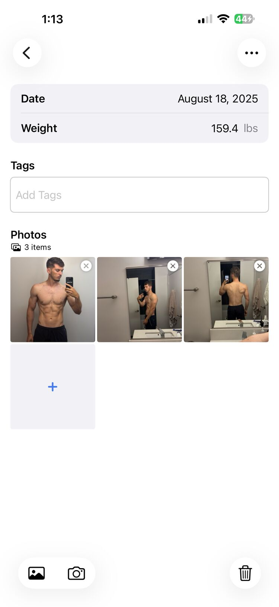
Entry form
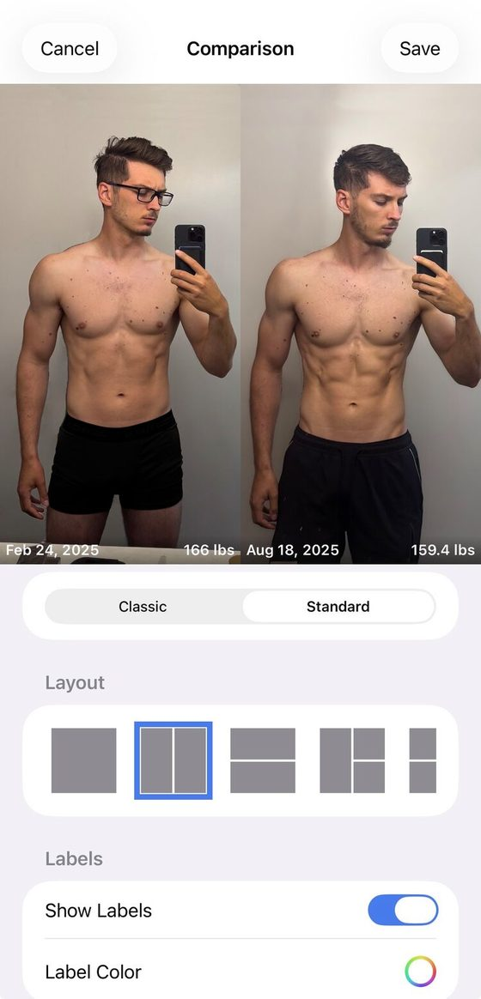
Comparison editor
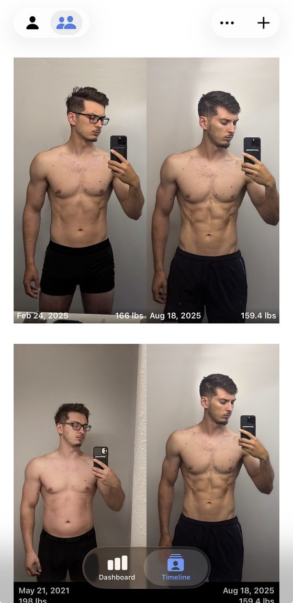
Saved comparison cards in the timeline, with date and weight on each photo.
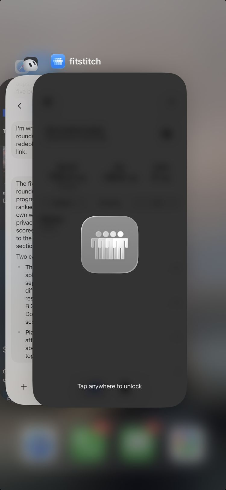
Face ID lock hides the app in the app switcher.
Grade: total TBD until design, performance and backup are scored; 10 from the four scored. Power-user suite piece. Last updated: Sep 30, 2026.
Price Free trial, then $4.99 a month, $9.99–29.99 a year or $39.99 lifetime.
Data capture 4. Timer, date and weight at capture. No ghost overlay, and the UI isn't the most intuitive.
Alignment 3 [CONFIRM: proposed alignment score]. Auto-alignment is great but not exact: roughly three in four photos land right [CONFIRM: Mark's "75%," wording]. Manual alignment is sluggish, like it has the brakes on.
Comparison 4. Side by side, slider, overlay with an opacity slider, and a time-lapse with playback controls, each shareable. The UX isn't as smooth.
Privacy TBD. Data Not Linked to You, and no account.
Backup TBD. No in-app backup, so deleting the app deletes your photos.
Data import TBD.
Design TBD.
Performance TBD.
It's not the most intuitive app, but it's quite powerful. Front, side and back timelines scrub by day, with the date and weight on each photo. It ranks No. 1 for "progress photos" in App Store search.
Flaws but not dealbreakers:
It has a short track record, and the listing has been renamed twice since September.
Auto-align snaps shoulders and hips to the guides.
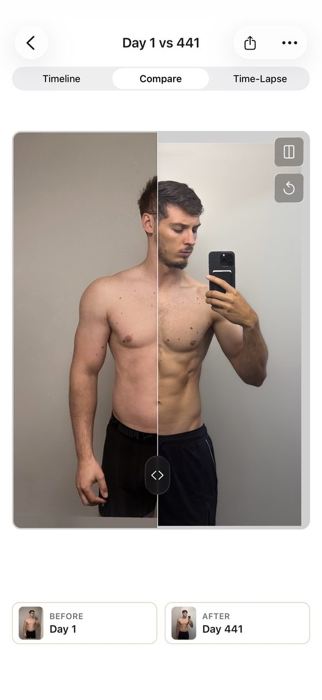
Slider compare, Day 1 vs 441.
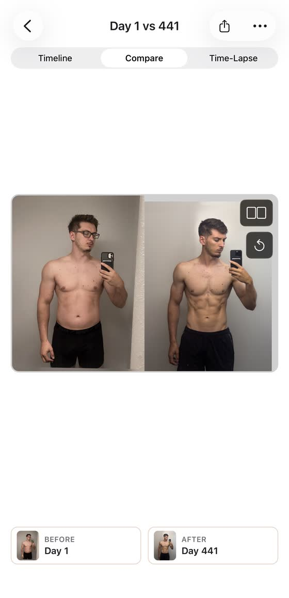
Side by side.
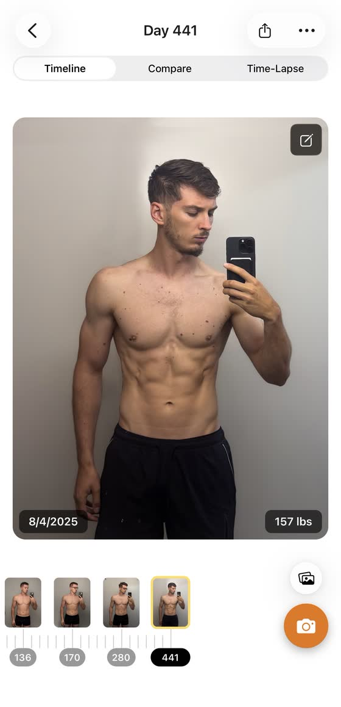
Timeline scrubber with date and weight.
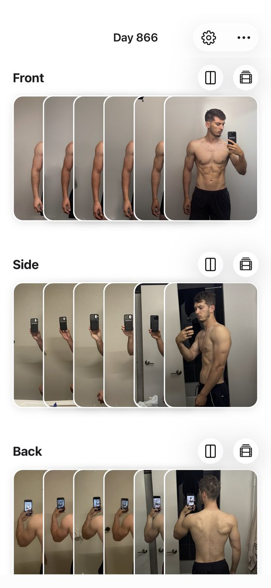
Front, side and back stacks.
Grade: total TBD until privacy, backup, design and performance are scored; 11 from the three scored [CONFIRM: v7 provisional A, 20/25]. Beginner all-in-one. Last updated: Sep 24, 2026.
Body Measurements Tracker App ("Progress" by Lasmit)
★ 4.6 · 9,355 ratings · Since 2012 · Updated Sep 2026(App Store, Oct 2026)
Price Free, but photo logging needs Pro: from $3.99 a month (the store also lists $5.99) to $29.99 lifetime.
Data capture 3 [CONFIRM: proposed score]. A nice weight scroller and a timer, but a single check-in is a multi-page form.
Alignment 0 [CONFIRM: proposed score; rubric floor is 1, use 0 or 1?]. None. Its Smart Overlay has been off by default since February [CONFIRM: whether it aligns anything when on].
Comparison 2 [CONFIRM: proposed score]. Side by side in landscape only, with a date stepper on each side. Awkward, and not the best UI.
Privacy TBD. Photos sync to your iCloud. Mixpanel, Firebase, Crashlytics and RevenueCat are inside, and its policy collects your email via Vero and Help Scout. An app lock setting exists but didn't block anything for me [CONFIRM: exact behavior].
Backup TBD. iCloud sync restores your data on a new phone, per its help article.
Data import TBD. Two-way Apple Health sync.
Design TBD.
Performance TBD.
I can tell someone put a lot of effort into Lasmit, but it doesn't land. Everything feels awkward, and using it gave me a headache. It's a measurement tracker first, and the oldest App Store listing here.
Flaws but not dealbreakers:
A Sep 24, 2026 review says a "lifetime" purchase now needs an annual plan to log more than four measurements.
A Dec 2025 review is titled "Lost FIVE YEARS of data in latest upgrade."
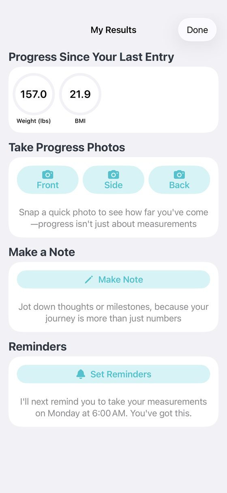
My Results: weight, BMI and photo buttons.
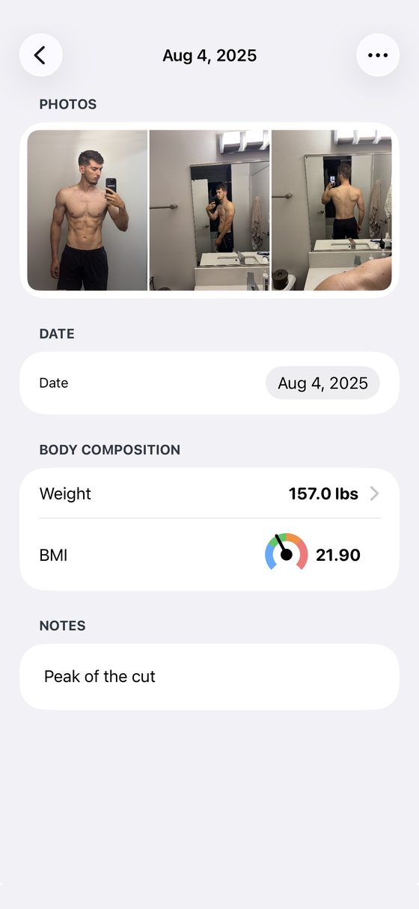
One check-in: photos, weight, BMI and a note.
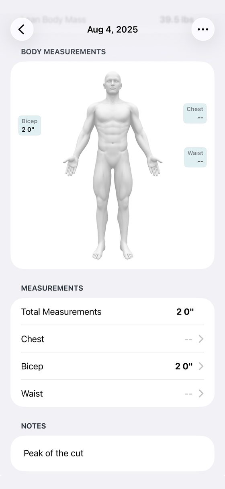
Body measurements.
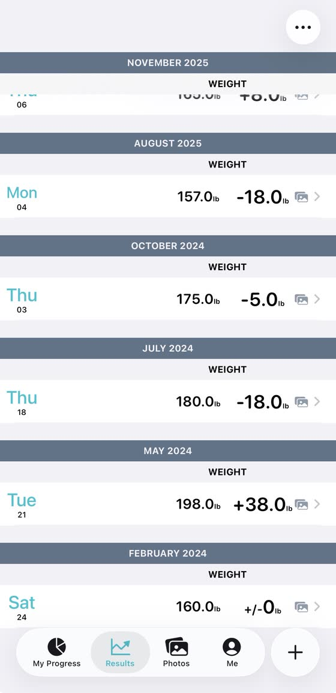
Weigh-ins by month.
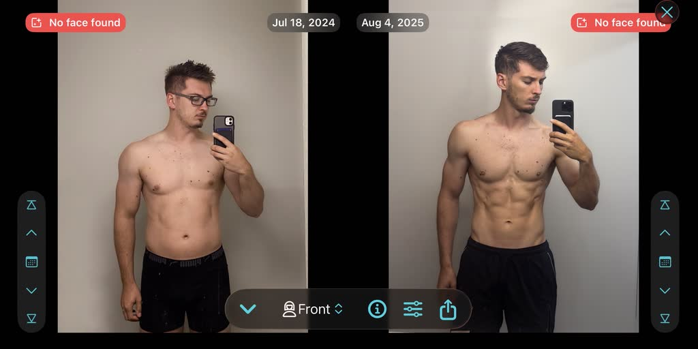
Compare works in landscape only.
Grade: total TBD until privacy, backup, data import, design and performance are scored; 5 from the three proposed [CONFIRM: v7 provisional B, 16/25]. Beginner all-in-one. Last updated: Sep 22, 2026.
Check-In: Physique
No ratings yet · Since Apr 2026 · Updated Oct 2026(App Store, Oct 2026)
Data capture TBD. Ghost overlay, streaks, anchored reminders, widgets and Live Activities.
Alignment TBD. The ghost overlay at capture; no AI by design.
Comparison TBD. Same-pose slider compare.
Privacy TBD. Data Not Collected, and everything stays on the device.
Backup TBD. Device only, with a journal backup you export, reviewed before restoring since 2.5.
Data import TBD. Photo-library import and Apple Health weight. Bulk import is unclear [CONFIRM].
Design TBD.
Performance TBD.
Check-In is free, has the cleanest privacy label here, and uses no AI by design. Then & Now is the runner-up on privacy, also labeled "Data Not Collected."
Flaws but not dealbreakers:
It needs iOS 26, so older iPhones can't run it.
It's new, with no track record yet.
[SCREENSHOT: Check-In – ghost overlay capture]
Grade: [CONFIRM: rescore on the v8 rubric; v7 provisional B, 17/25]. Power-user suite piece. Last updated: Oct 2, 2026.
Progress Pics Photo Then & Now
★ 5.0 · 9 ratings · Since Feb 2026 · Updated Jul 2026(App Store, Oct 2026)
Price Free + in-app purchases: $4.99 a month, $29.99 a year or $99.99 lifetime. Free caps photos per week and watermarks exports.
Data capture 4 [CONFIRM: proposed score]. Very nice import process, with a weight required for every photo. Voice timer, body silhouettes and a ghost overlay; the timer and overlay are Premium. The only voice timer of the 10 apps [CONFIRM after testing].
Alignment 2 [CONFIRM: proposed score]. Manual Crop & Align with a rotation dial and a ghost toggle. It works, but it's buried in each photo's Adjust & Crop, so it's not convenient.
Comparison 3 [CONFIRM: proposed score]. Video time-lapse, slider, 2x1 and 1x1, with date and weight on each photo. A standard UI that works but isn't amazing. Premium unlocks every compare mode.
Privacy TBD. Data Not Collected, no account and no analytics SDKs. Face ID lock per album.
Backup TBD. On the device. iCloud (CloudKit) sync and Save to Camera Roll are optional and off by default.
Data import TBD. Bulk import reads each photo's date taken. Apple Health sync (listing).
Design TBD.
Performance TBD.
Then & Now is one of the better apps for compare. I picked it for hands-free capture because of its voice timer, which needs Premium. Album types like Renovations, Plants and Pets make it a general-purpose app, not only for fitness.
Flaws but not dealbreakers:
It has few ratings, so there's little track record.
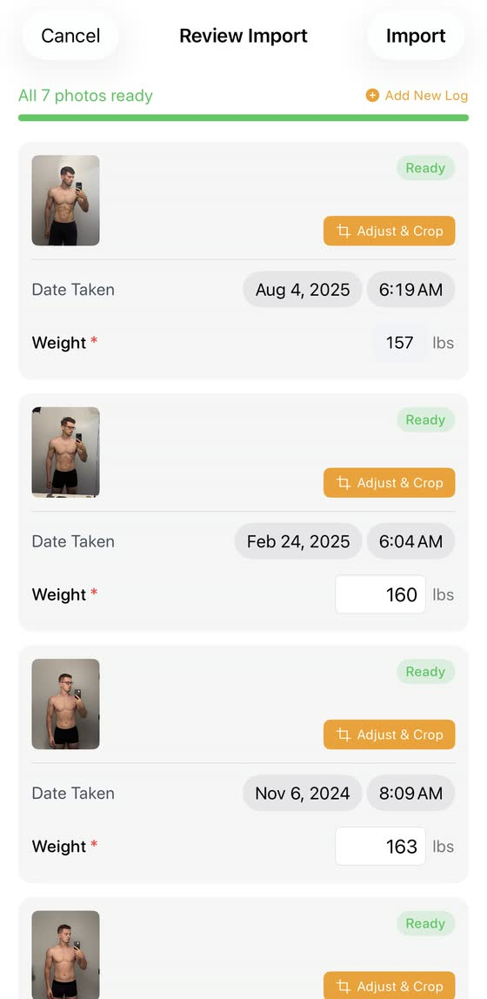
Import reads each photo's date and asks for a weight.
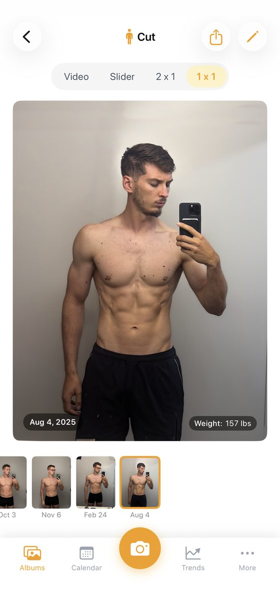
1x1 compare with date and weight.
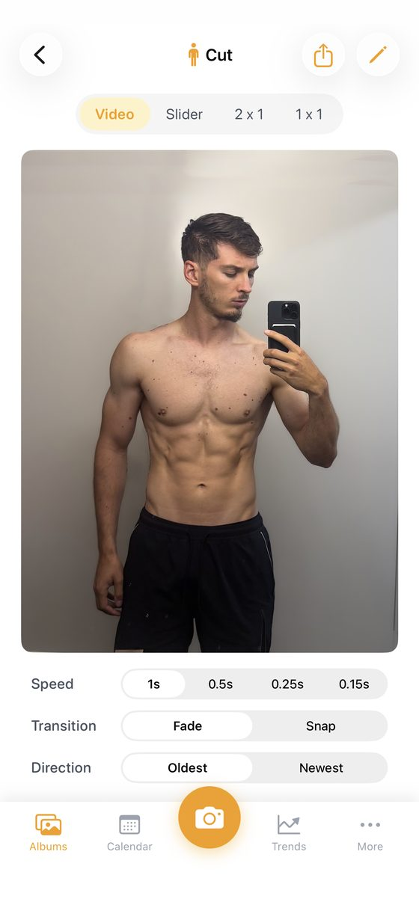
Video mode: speed, fade or snap, and direction.
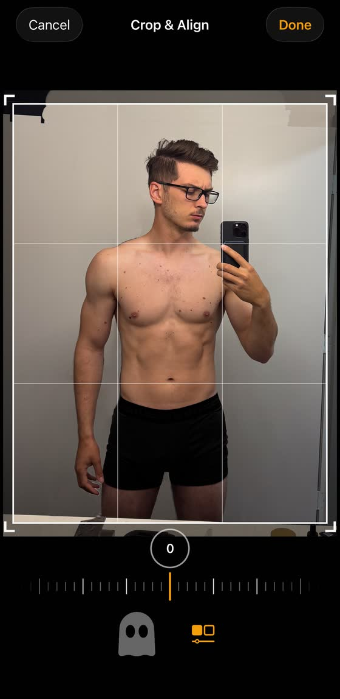
Crop & Align, reached one photo at a time.
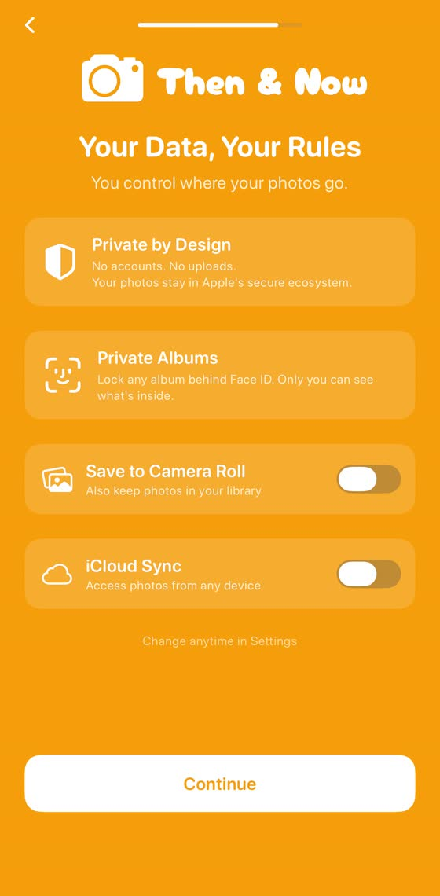
No accounts or uploads; sync is off by default.
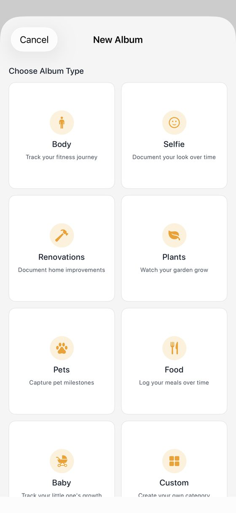
Album types go well beyond fitness.
Grade: total TBD until privacy, backup, data import, design and performance are scored; 9 from the three proposed [CONFIRM: v7 provisional A, 20/25]. Beginner all-in-one [CONFIRM fit]. Last updated: Jul 4, 2026.
What about Android?
I tested on iPhone, so this is short. Check-In has an Android version, which lists condition tags, notes and measurements the iPhone app lacks. Thumbstone has one on Google Play, and Google Photos covers the DIY route. Lasmit and Recomp are iOS only.
Price Free 7-day trial, then $29.99 a year, $4.99 a month or $129.99 lifetime, the most on this list. The store also lists $4.99 a week. Paying removes the watermark.
Data capture 3 [CONFIRM: proposed score]. Ghost overlay and a timer, but no weight logging. It's a general-purpose before/after app.
Alignment 0 [CONFIRM: proposed score; rubric floor is 1, use 0 or 1?]. None, though the ghost helps you line up before the shot.
Comparison 2 [CONFIRM: proposed score]. Video time-lapse, slider, 1x2 and 2x1, but the UI is poor, and you place each photo by hand.
Privacy TBD. Face ID lock. Labeled Data Not Collected, but its policy lists anonymous analytics and crash reports.
Backup TBD. Cloud sync, per its paywall.
Data import TBD. Imports existing photos from your library.
Design TBD.
Performance TBD.
I don't recommend Metamorph at all. It's expensive for a general-purpose before/after app with a poor compare screen.
There's no iPad or Android version, and Metamorph's own blog ranks Metamorph first.
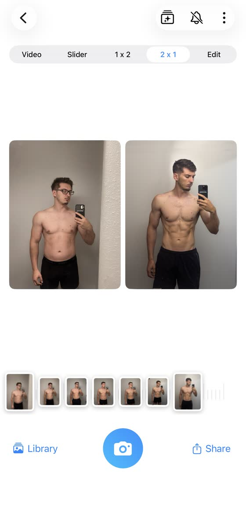
2x1 compare, one of five tabs.
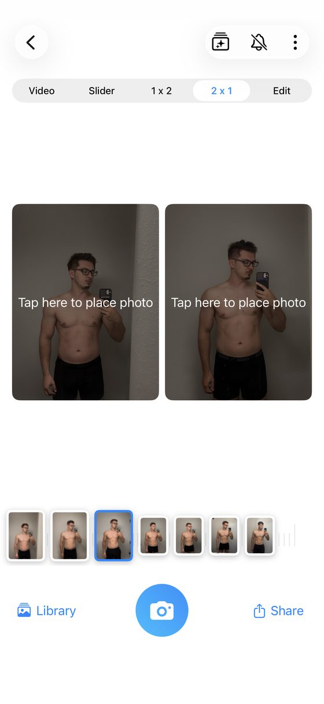
You place every photo by hand.
My Morphs home.
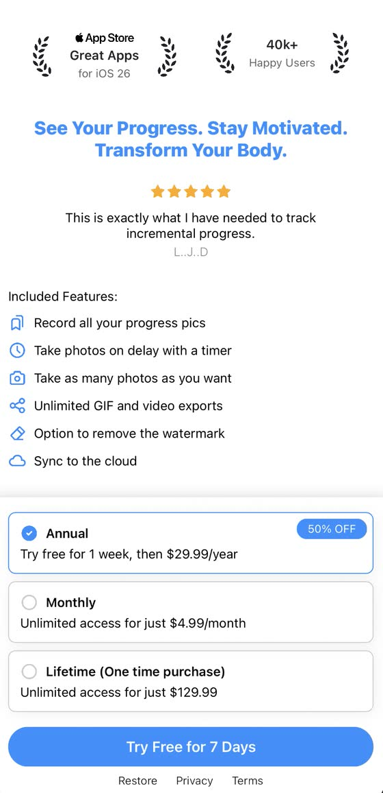
The paywall: $29.99 a year after a free week.
Grade: total TBD until privacy, backup, data import, design and performance are scored; 5 from the three proposed [CONFIRM: v7 provisional B, 17/25]. Beginner all-in-one. Last updated: Aug 6, 2026.
Body Tracker - Photo Journey
★ 4.4 · 113 ratings · Since 2024 · Updated Aug 2026(App Store, Oct 2026)
Price Free + in-app purchases: $3.99 a week, $5.99 or $9.99 a month, or $39.99 or $49.99 a year.
Data capture 3 [CONFIRM: proposed score; camera capture untested]. It took a 475-photo album in one pick but imports at most 250, and the import took about 15 minutes [CONFIRM: whether all 250 imported; the review screen showed "Import 59 Photos"].
Alignment TBD [CONFIRM: alignment score]. Auto and Adjust buttons in compare, and black borders on the slider suggest auto-alignment.
Comparison 2 [CONFIRM: proposed score]. A standard slider and side by side, with weight, a BF estimate and a score. With hundreds of photos it's pretty much unusable, and going through them is very hard.
Privacy TBD. Photos stay on your iPhone with no account needed, but AI features send them to Google's Gemini, which discards them, per its policy. The label includes "Data Used to Track You."
Backup TBD. Photos live only on your iPhone, and deleting the app removes them, per its policy.
Data import TBD. An on-device scan picks your "best" photos and labels poses; it labeled a back shot "Front." Apple Health and Hevy connect.
Design 4 [CONFIRM: proposed score]. High polish, and the icons and design look great.
Performance 2 [CONFIRM: proposed score]. Both import and compare bog down with hundreds of photos.
You can see the developer put a lot of effort into GainFrame. With 20 to 30 photos it probably works very well, but it struggles with hundreds. It also estimates body fat with AI, which this guide doesn't grade; what scans and AI can tell you covers accuracy.
Flaws but not dealbreakers:
AI scores are noisy across the category. In Rate My Physique, one photo posted twice scored 9.6, then 8.5.
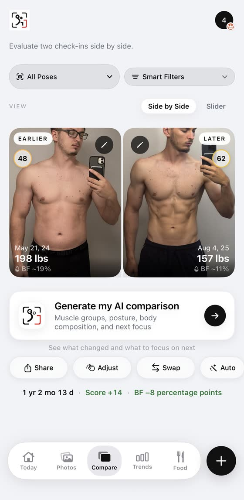
Side by side with weight, BF estimate and score.
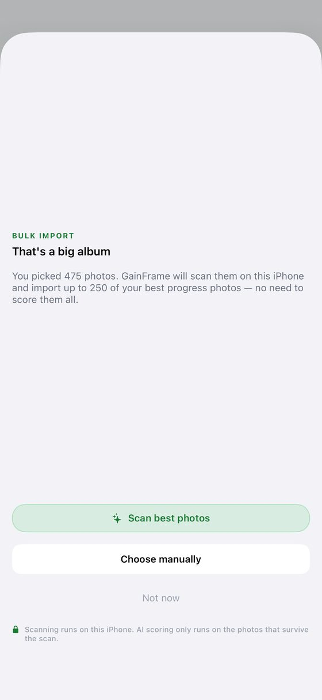
475 photos picked, 250 imported at most.
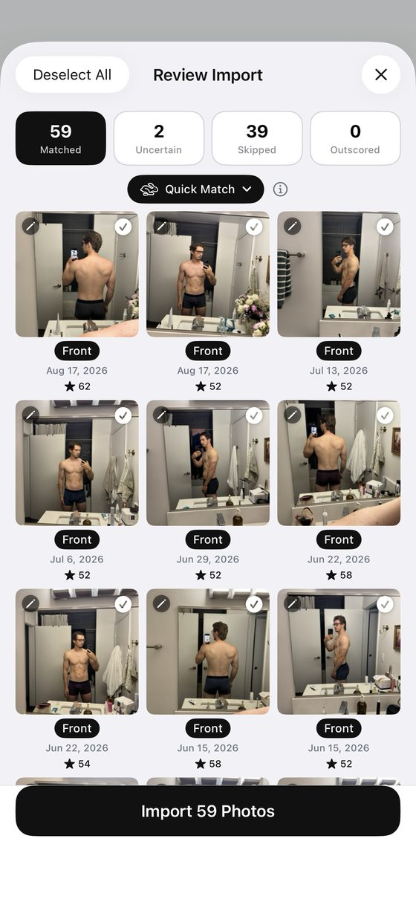
A back shot labeled Front.
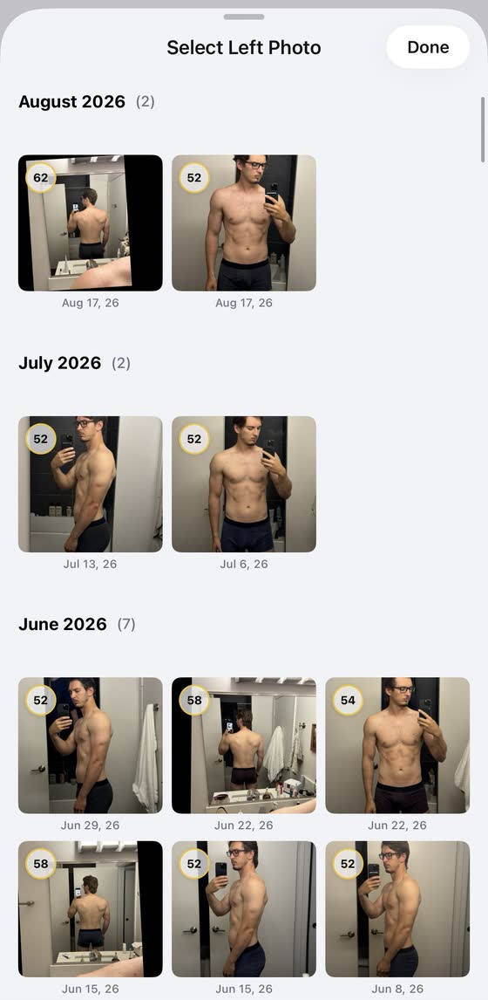
Picking one photo from hundreds, month by month.
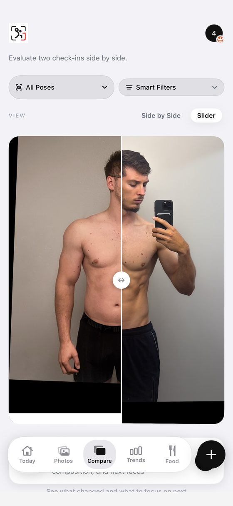
Slider compare, with black alignment borders.
Grade: total TBD until alignment, privacy, backup and data import are scored; 11 from the four proposed [CONFIRM: v7 provisional A, 19/25]. Beginner all-in-one [CONFIRM fit]. Last updated: Oct 3, 2026.
Your phone's Photos app (plus Notes and Reminders)
Price Free, built into iOS. iCloud beyond 5 GB is paid.
Data capture TBD. Weight lives in a note or spreadsheet, apart from the picture.
Alignment TBD. None.
Comparison TBD. No side-by-side view, so I screenshotted pairs by hand.
Privacy TBD. The Hidden album keeps photos out of your grid, locked behind Face ID by default.
Backup TBD. iCloud Photos backs them up.
Data import TBD.
Design TBD.
Performance TBD.
It's free, already on your phone, and tells you whether the habit sticks. Make a "Progress" album and a weekly reminder, and that's the whole setup.
Flaws but not dealbreakers:
After a year, finding "week 6" takes a lot of scrolling.
[SCREENSHOT: Photos app – progress album grid]
Grade: [CONFIRM: rescore on the v8 rubric; v7 provisional C, 13/25]. Beginner all-in-one.
Hevy: a workout log. Photos sit under Measures in your Hevy account, with no alignment.
MyFitnessPal: a calorie tracker that attaches a photo to a weigh-in, stored in your MyFitnessPal account.
Timelapse and collage makers such as Progress - AI Timelapse (Amor Fati Apps) [CONFIRM: still listed]: they turn photos into a video or a layout, not a check-in record.
Dropped before testing:
Body tracker: Photo & measure (Igor Korolev): one-time purchase, overlay and timer, but reviews describe slowdowns.
ProgressCam, SameShot and SideLens: too few reviews to judge.
Fitness Camera: Android only, though it ranks well on Google Play.
Out of date, gone, or slowing down:
SnapTrack (Apptimal): last updated June 12, 2017, yet in several 2026 roundups, one calling it "$2.99 one-time" though it's now free with in-app purchases.
Snapsie (Nibble Apps): last updated August 3, 2017, still near the top of App Store search. A 2020 review describes losing 53 days of photos on a new phone.
Shapez: no iOS app by that name now. GainFrame says it became FormaTrack: Weight & GLP-1 [CONFIRM]. Google Play still lists it.
Fitstream and Formfy: not on the US App Store.
BodySpace: no standalone app, and it's unclear whether the Bodybuilding.com app still does progress photos [CONFIRM].
BeforeAfter (Instant Watermark): last updated August 2020, and a watermark tool, not a tracker.
Selfie A Day and LocalOne Gym Pics: last updated June 2025.
What happens to your photos when you switch phones
Lost photos are the No. 2 complaint in App Store reviews, after paywalls, as the Lasmit, Photo Journey and Snapsie reviews show. Every app uses one of three storage models:
On your device only: Recomp, Check-In and Thumbstone. Most private, and only as safe as your phone backup [CONFIRM per app: data survives a restore].
Your own iCloud: Fit-Stitch, Lasmit, Metamorph and Then & Now if you turn it on [CONFIRM: Fit-Stitch delete-and-restore test pending], and the Photos app with iCloud Photos on.
Someone else's servers: Hevy and MyFitnessPal, so signing in on a new phone brings photos back. GainFrame uploads only the photos it analyzes.
Recomp has no account or cloud sync, so your iPhone backup is the only backup of your check-ins. iCloud and Finder backups include Recomp's check-ins and photos, and restoring one to a new phone brings them back. Imported originals also stay unchanged in Photos. Camera shots exist only inside Recomp and aren't saved to Photos [after 3.6: camera saves]. Delete the app without a recent backup and they're gone. Check-in dates and weights export as a CSV, without photos, from Settings > Advanced Settings. Details are in Recomp's privacy policy.
How long has each app been around, and who still reviews it?
A star average means more when it rests on thousands of ratings over many years. Here is each scored app's US rating count, its written reviews from Jul 2 to Oct 2, 2026, and how long it has shipped updates.
App
Ratings (avg)
Written reviews, last 3 months
First released
Last updated
Lasmit "Progress"
9,355 (4.63)
5
Dec 17, 2012
Sep 22, 2026
Fit-Stitch
331 (4.77)
1
Jan 9, 2014
Sep 30, 2026
Photo Journey
113 (4.42)
0
Jul 5, 2024
Aug 1, 2026
Metamorph
68 (4.38)
1
Oct 10, 2024
Aug 6, 2026
Thumbstone Progress Pics
43 (4.65)
0
Mar 8, 2026
Sep 24, 2026
Then & Now
9 (5.0)
0
Feb 26, 2026
Jul 4, 2026
Check-In: Physique
0
0
Apr 12, 2026
Oct 2, 2026
Recomp
0
0
Apr 27, 2026
Sep 14, 2026 [CONFIRM: store shows 3.3; update for 3.6]
Lasmit's angry reviews sit on a large, steady base. Its 9,355 ratings average 4.63 since 2012, so its 2025 reviews about lost data and the paywall are loud exceptions. Its 5 written reviews in three months, the most here, show people still use it. The six apps launched since 2024 have 113 ratings or fewer and at most one recent written review, so one review can swing their picture. Recomp and Check-In have none yet.
Counts are from the US App Store on Oct 2, 2026, with dates in Pacific time. Written reviews are a subset of ratings, and Apple's public feed shows only about the 500 most recent per app, a cap no app here reached. The Photos app is built in and has no listing.
What is the best app to track progress? For progress photos, Recomp, the free app I built. For measurement history and Apple Health, Lasmit, since Recomp doesn't chart measurements or read Apple Health [after 3.6: body measurements]. I don't grade AI body-fat estimates; what scans and AI can tell you explains why. GainFrame has them, and it's graded on the same criteria as every other app.
What is the best way to take progress photos? Same spot, light, time and three poses, weekly. A ghost overlay of your last photo helps, and Check-In, Then & Now, Photo Journey and Recomp have one [after 3.6: ghost overlay]. My guide on how to take progress photos covers the setup [CONFIRM: final URL].
Is there a free progress photo app with no subscription? Yes. Recomp and Check-In: Physique are free with no in-app purchases, though Check-In needs iOS 26. Fit-Stitch is a one-time $4.99.
Do progress photo apps upload my photos? GainFrame uploads the photos it analyzes, and Hevy and MyFitnessPal store them on their servers. Check-In, Then & Now and Metamorph are labeled "Data Not Collected." Recomp never uploads your photos and collects anonymous analytics and crash data, not linked to you.
Can I import years of old progress photos? Recomp bulk-imports up to 500 photos at a time into check-ins by date, plus weight from a CSV. Then & Now's bulk import reads each photo's date and asks for a weight. Most others add photos one at a time [CONFIRM].
Which progress photo app features matter most? Reminders and a place for notes, judging by 732 App Store reviews. Nobody in them asked for tags, streaks, themes or a social feed, and only 6 mention a timelapse.
Is Recomp the same as Recomp AI? No. "Recomp AI – 3D Body Scanner" is a body scanner from ISO Labs, not my progress photo app.
[CONFIRM: publish date]: first published. 10 apps tested on [CONFIRM: iPhone model], iOS [CONFIRM: version], Recomp on 3.6 [CONFIRM]. Store data checked Sep 30 to Oct 1, 2026.
I retest after any major version, table-column change or reader report of data loss, and date every pick change here. Found a mistake? Email markstepchin@gmail.com [CONFIRM: corrections address].
About the author: I'm Mark Stepchin, a lifter and software engineer. Here's why I built Recomp. If you use an app I missed or hit an edge case in one I covered, email me.
Import your photos and weight in under a minute. Compare progress
photos on a before-and-after timeline, scroll to any date instantly,
and align photos on the fly. Recomp never uploads your photos.